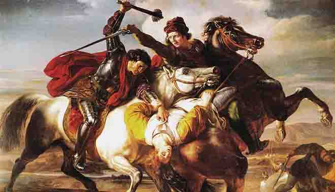

La mappa mostra le mura della città, le porte principali e alcuni dei principali punti di riferimento, tra cui il Monte del Tempio, la Chiesa del Santo Sepolcro e la Torre di David. Il poema è ambientato durante la Prima Crociata, avvenuta dal 1096 al 1099, e racconta la storia dell'assedio dell'esercito cristiano e della cattura di Gerusalemme da parte delle forze musulmane. Vale la pena notare che l'attuale disposizione di Gerusalemme è cambiata nel corso dei secoli, e la mappa sopra è una rappresentazione semplificata della città durante il periodo crociato. Tuttavia, fornisce un utile riferimento visivo per comprendere l'ambientazione del poema epico del Tasso. La mappa di Gerusalemme al tempo della Prima Crociata riflette il conflitto mostrando i vari punti di riferimento e le aree che furono significative durante la Crociata. Ad esempio, il Monte del Tempio e la Chiesa del Santo Sepolcro erano importanti siti religiosi che furono pesantemente contesi durante la Crociata. Vengono mostrate anche le mura della città e le porte, che evidenziano le sfide che i cavalieri cristiani dovettero affrontare nel tentativo di conquistare la città dalle forze musulmane. La mappa mostra anche l'ubicazione della Torre di David, che costituiva un punto strategico di difesa della città. Nel complesso, la mappa fornisce una rappresentazione visiva del paesaggio fisico di Gerusalemme durante il periodo della Prima Crociata, che fu segnata dal conflitto e dalla lotta per il controllo sulla città santa.
 <-- Home